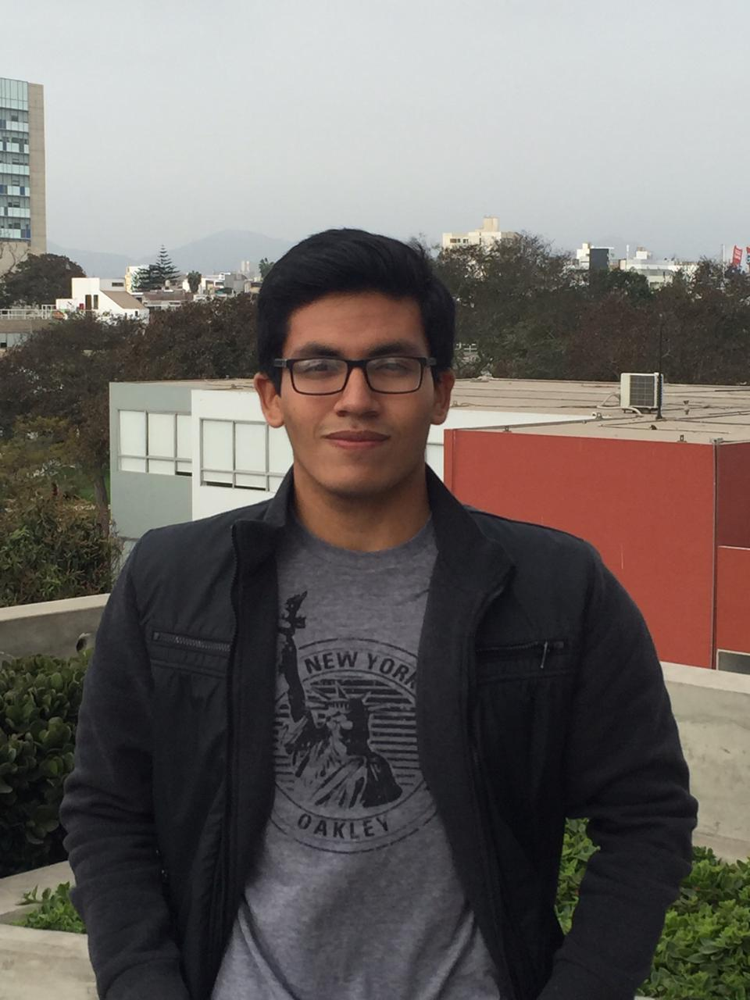
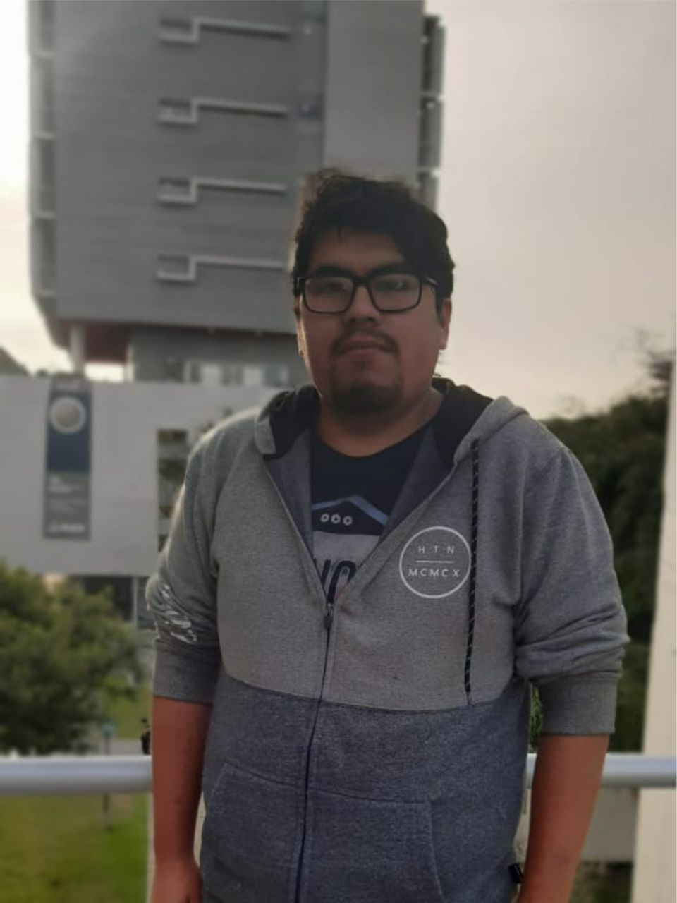
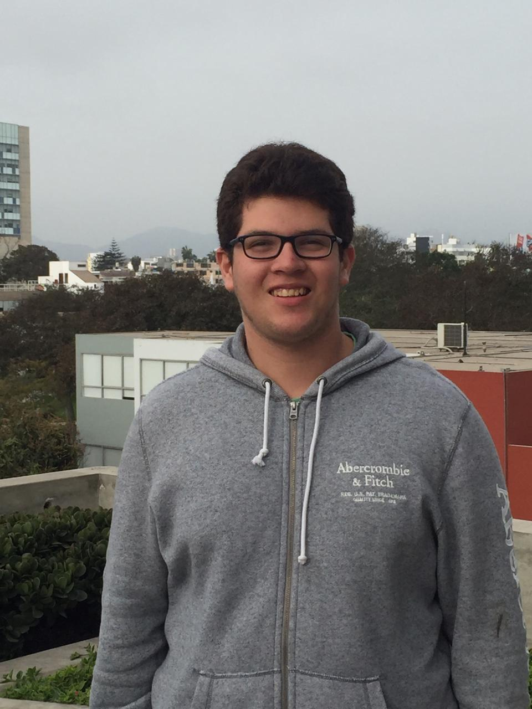
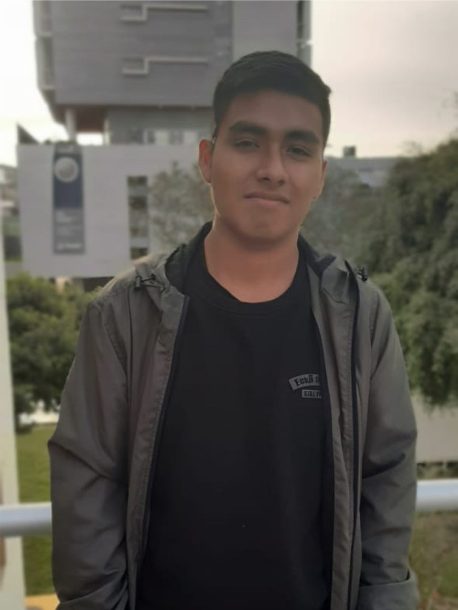
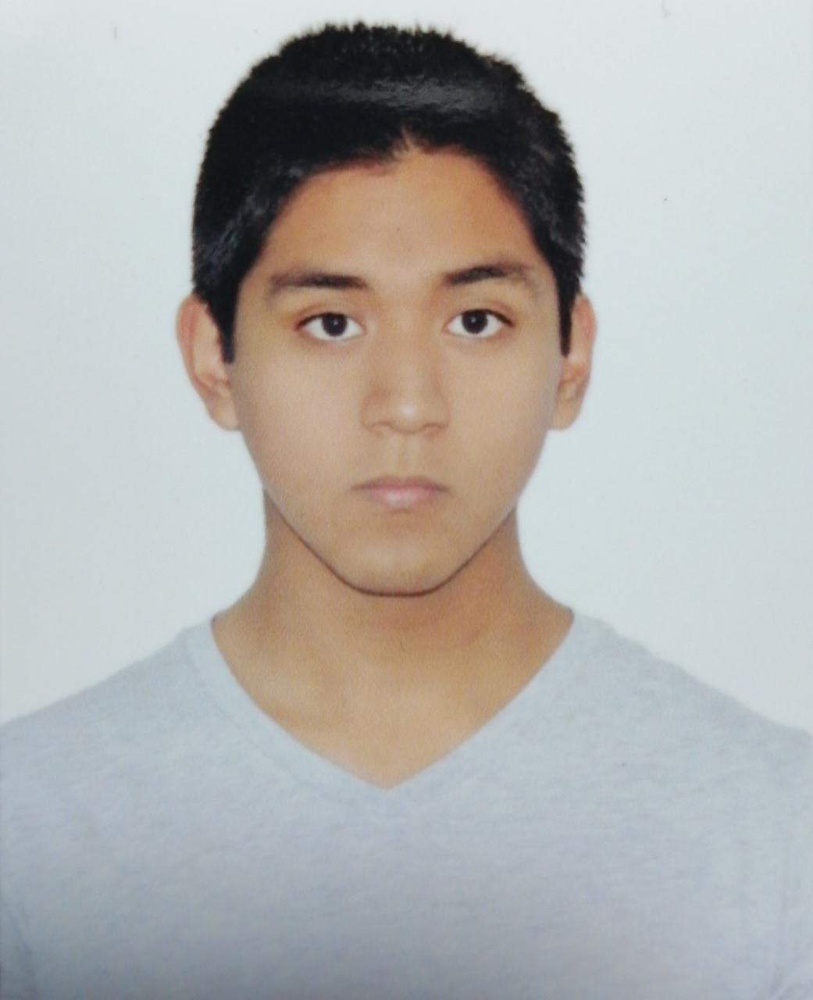

Equipo
El equipo encargado de la investigación,organización de la información y posteriro publicación de la página web esta conformado por alumnos de la Universidad Peruana Cayetano Heredia y la Pontificie Universidad Catolica del Perú, estos son:
Armando Floréz Troncos
Pertenezco a la 3° promoción de ingenieria biomédica en PUCP-UPCH. Mi interes por la carrera deriva del deseo de mejorar el sistema de salud en mi país a traves de la tecnología con soluciones concretas e innovadoras.

Cesar Morales Vasquez
Soy un alumno de 2° ciclo de ingeniería biomédica, mis intereses simpre fueron la creación y desarrollo de nuevos tipos de softwares y protesis biomédicas, siempre me intereso la busqueda de información por hobby.
Jorge Medina Celis
Soy un alumno del 2° ciclo de la carrera de ingeniería biomédica y mis intereses están centrados específicamente al área de ingeniería de tejidos con el fin de mejorar la calidad de vida de las personas.
Hans Trujillo
Soy un joven estudiante del 2° ciclo de ingeniería biomédica, me gusta practicar deportes en mis ratos libres o salir con mis amigos. Estudio esta carrera pues me llama mucho la atención la elaboración de las prótesis y la creación de dispositivos que puedan ayudar al proceso de rehabilitación. Por ello, pienso especializarme en la rama de biomecánica y rehabilitación; pues me gustaría mejorar la condición de vida de aquellas personas que, por accidentes u otras razones, padecen alguna discapacidad."
Alvaro Quispe Arango
Mi nombre es Álvaro Gaston, tengo 18 años y soy alumno de ingeniería Biomédica de segundo ciclo. Me gusta hacer deporte y los juegos de video. Tengo gran afán por resolver mis dudas y soy bastante curioso por ese lado.